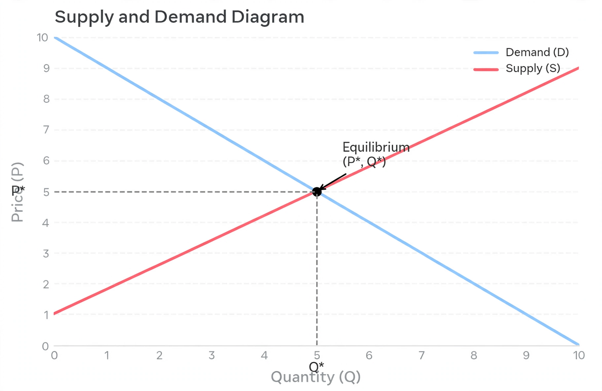

Market equilibrium
In economics, economic equilibrium is a situation in which economic forces such as supply and demand are balanced and in the absence of external influences the (equilibrium) values of economic variables will not change. Market equilibrium in this case is a condition where a market price is established through competition such that the amount of goods or services sought by buyers is equal to the amount of goods or services produced by sellers.

This price is often called the competitive price or market clearing price and will tend not to change unless demand or supply changes, and quantity is called the "competitive quantity" or market clearing quantity.
Properties
At prices above equilibrium there is excess supply (a surplus), which puts downward pressure on price as sellers compete to dispose of unsold stock. At prices below equilibrium there is excess demand (a shortage), which bids the price upward. In a simple partial-equilibrium model with well-behaved curves, the equilibrium is unique and stable. The concept is associated with Adam Smith and was formalised by Léon Walras, who defined general equilibrium across all markets simultaneously, and by Alfred Marshall, who developed the partial equilibrium analysis of a single market.
Changes in equilibrium
An increase in demand shifts the demand curve to the right, raising both the equilibrium price and quantity (other things equal); a decrease in supply shifts the supply curve to the left, raising price and reducing quantity. Comparative statics of this kind is the basic tool of supply-and-demand analysis. Government interventions such as price ceilings and price floors prevent the market from reaching equilibrium and create persistent shortages or surpluses.
General equilibrium
General equilibrium theory, developed by Walras and formalised by Arrow and Debreu in the 1950s, studies the simultaneous equilibrium of many interrelated markets and proves, under stated conditions, the existence of a set of prices clearing all of them. The first fundamental theorem of welfare economics states that a competitive equilibrium is Pareto efficient under certain conditions.
See also
References
Mas-Colell, A., Whinston, M. D., & Green, J. R. (1995). Microeconomic Theory. Oxford University Press.
Marshall, A. (1890). Principles of Economics. Macmillan.